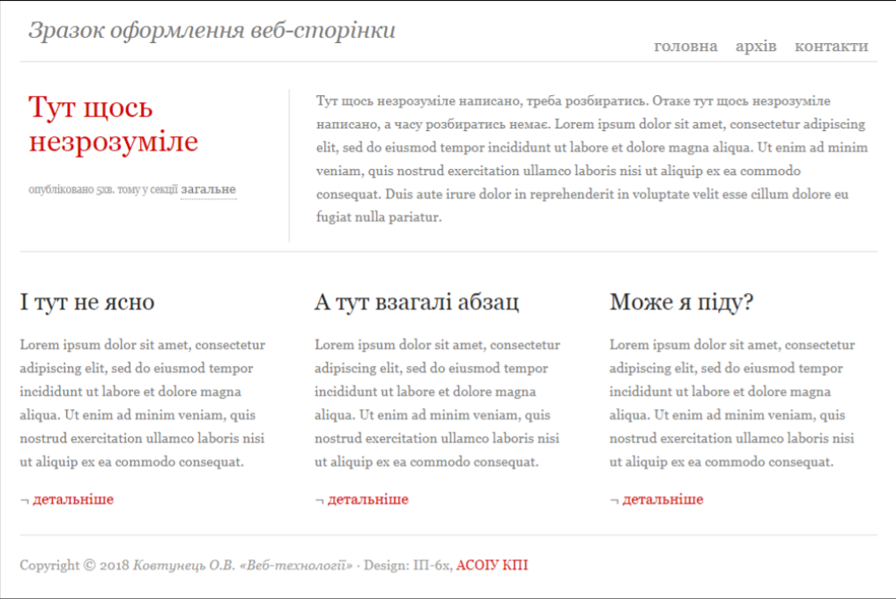

Task list
Лабораторна робота № 1
Створіть сайт з обраної самостійно тематики.
Хід виконання:
- Створіть п’ять HTML-документів, пов’яжіть їх між собою
посиланнями.
- Використайте теги DIV, SPAN, P, H1, H2, H3, A, UL, OL, LI, TABLE,
TR, TD для виділення окремих структурних елементів HTML-сторінки
- Використайте теги IMG, A, MAP для додавання на HTML-сторінки
зображень, посилань та карт посилань із них.
- Перегляньте сайт через локальну файлову систему. Викладіть ваш сайт
на Github.
- Порівняйте способи доступу до HTML-сторінок через локальну
файлову систему і через інтернет. При потребі підкоригуйте роботу
посилань.
Лабораторна робота № 2
Створіть HTML-документ з таблицями 1, 2, 3, 4.
Лабораторна робота № 3
Візуалізуйте сайт, створений в лаб. №1, з допомогою застосування CSS до
кожного тега в тілі HTML-документів. Використайте всі відомі вам
способи задання властивостей CSS.
Лабораторна робота № 4
Відновіть CSS-документ, який для заданого HTML-кодудає наступне зображення:

Написи «Тут щось незрозуміле», «загальне», «головна», «архів»,
«контакти», «детальніше», «ACOIУ KПI» є посиланнями, при навенні
курсора колір цих посилань має змінюватися на інший.
Сторінка «гумова», при зменшенні ширини екрана браузера елементи
верхньої половини змінюють свій розмір, елементи нижньої половини
переміщуються нижче.
Лабораторна робота № 5
-
Створіть зображення двоколірного прапора з горизонтальними
однотонними областями, збережіть його в різних растрових
стандартних форматах, проаналізуйте отримані результати.
Хід виконання:
- У графічному редакторі створіть нове кольорове зображення із обраними розмірами
ширини і висоти.
- Виділіть верхню горизонтальну область, зафарбуйте її обраним кольором №1 в новому
шарі, виділіть нижню горизонтальну область, зафарбуйте її обраним кольором №2 в
новому шарі.
- Збережіть оригінальне зображення у внутрішній формат графічного редактора,
збережіть копію зображення в різних растрових стандартних форматах для подальшого
аналізу.
- Порівняйте результати за розмірами файлів, кількістю артефактів і якістю зображень,
зробіть висновки.
-
Створіть зображення "Намальований ноутбук, на екрані якого
відображається екран вашої робочої машини під час роботи з
графічним редактором ", збережіть його в різних растрових
стандартних форматах, проаналізуйте отримані результати.
Хід виконання:
- Намалюйте олівцем на чистому листі паперу розкритий ноутбук у ракурсі "три чверті",
щоб було видно екран, відскануйте/сфотографуйте малюнок, відкрийте його у
графічному редакторі, почистіть зайві лінії і "сміття".
- Переведіть зображення в кольоровий режим, щоб розфарбувати його.
- Підготуйте градієнтні або суцільні заливки для окремих областей.
- Виділяючи частину малюнка, розфарбуйте її в новому шарі.
- Зробіть копію екрана і, трансформуючи її, накладіть на екран ноутбука у вашому
зображенні.
- Збережіть оригінальне зображення у внутрішній формат графічного редактора,
збережіть копію зображення в різних растрових стандартних форматах для подальшого
аналізу.
- Порівняйте результати за розмірами файлів, кількістю артефактів і якістю зображень,
зробіть висновки.
-
Перефарбуйте окремі складові кольорової фотографії.
Хід виконання:
- Відкрийте обрану фотографію у графічному редакторі.
- Перефарбуйте область зображення кистю із обраними налаштуваннями.
- Перефарбуйте іншу область зображення зміною відтінку кольрокоректуючим
інструментом Image / Adjust / Hue / Saturation (Зображення / Налаштування / Колір /
Насиченість).
- Збережіть зображення у внутрішній формат графічного редактора.